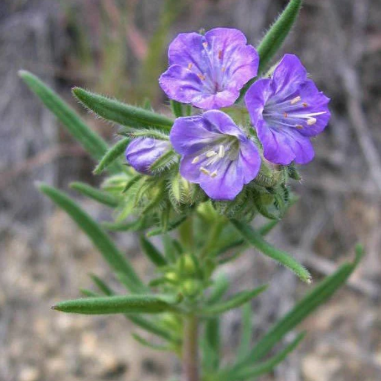

Phacelia linearis
Common name
Threadleaf Phacelia
Family
Hydrophyllaceae
Family common name
Waterleaf family
Blooms
April - July
Habitat
Sandy soils, shrublands, woodlands, forests at mid-elevations
Range Map